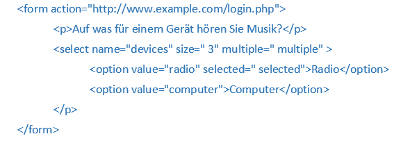
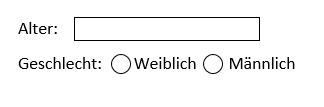
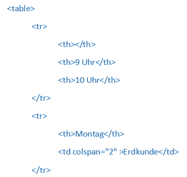

Internet
Entstehung des Internets
Die Entstehung des World Wide Web beruhte auf der Idee Computer miteinander zu verbinden und damit die Kommunikation zu vereinfachen. Es war im Endeffekt eine zufällige Errungenschaft und diese Ursprüngliche Idee entwickelte sich über 40 Jahre hinweg weiter.
Im September 1969 wurde das ARPANET (" Advanced Research Projects Agency Network ") live geschaltet. Es kann sozusagen als Mutter des Internets bezeichnet werden. Es wurde grundsätzlich für militärische Zwecke genutzt, leistete aber vor allem der Wissenschaft wertvolle Dienste beim Austausch von Nachrichten, bei der Kommunikation und bei der gemeinsamen Forschung. Genutzt wurde es bis im Jahre 1989. Es arbeitete genauso wie das heutige TCP-basierte Internet mit dem Austausch von Datenpaketen und legte damit den technischen Grundstein für ein weltweites elektronisches Netz.
Durch das Arpanet wurde das Time-Sharing eingeführt. Das war der erste konzeptionelle Ansatz in der Computertechnologie, mehrere Benutzer an einem Computer gleichzeitig arbeiten zu lassen, indem sie sich die Rechenzeit des einzigen vorhandenen Prozessors teilten. Jedem einzelnen Benutzer erschien es dabei so, als hätte er die gesamten Ressourcen des Computers stets für sich allein zur Verfügung. Es entsteht ein lokales Netz der Datenübertragung. Nach und nach wurden auch die verschiedensten Universitäten und Forschungseinrichtungen in das Netzwerk eingebunden und das ARPANET entwickelte sich langsam von einer militärischen zu einer zivilen Anwendung.
Die Paketvermittlung erfolgt durch das Zerkleinern von Daten, welches einen Absturz von Webseiten und dem Internet verhindert.
In den Siebzigern wurde das Verfahren der Paketvermittlung zur Datenübertragung in Rechnernetzen vermehrt angewendet. Längere Nachrichten werden in einzelne Datenpakete aufgeteilt, «beschriftet» und übermittelt, was einen Absturz von Webseiten oder dem Internet verhindern sollte. Sind die Pakete am Ziel angekommen, werden diese fehlerlos wieder zusammengesetzt.
Die Verwendung von Mails zur Kommunikation über ein Netzwerk wurde, nach dessen Einführung 1972, eine beliebte, von Wissenschaftlern verwendete Methode im sich untereinander auszutauschen. 1973 wurde als Übertragungsprotokoll das heute immer noch gültige, wenn auch in adaptierter und weiterentwickelter Form, Transmission Control Protocol, auch TCP entwickelt und kurz darauf implementiert.
Mitte der 1980er Jahre wurde das Netzwerk in MILNET für militärische Zwecke und das ARPANET für zivile Nutzung getrennt. Damit war der Zugang nicht mehr nur auf Universitäten und Forschungseinrichtungen beschränkt, sondern jedem möglich.
1991 wurde erstmals das World Wide Web veröffentlicht, aber erst durch den ersten grafischen Webbrowser namens Mosaic gelang dem WWW der Durchbruch. 1994 folgte der Netscape Navigator, welcher auch Unerfahrenen die Funktion des Internets erleichterte und eine Kommerzialisierung des World Wide Web verursachte.
Seitdem verändern neue Anwendungsgebiete und Techniken das Internet und ziehen gleichzeitig neue Nutzer an. Onlinespiele, Soziale Netzwerke, Blogs und das File Sharing sind neue Einsatzgebiete.
Funktion des Internets
Wird eine Webseite beispielsweise zuhause am PC aufgerufen, wird die Anfrage und die IP-Adresse des ausgehenden Rechners an das Modem geschickt. Hierzu wird die in der Suchleiste eingegebene Domain in eine Ziel-IP-Adresse übersetzt. Grundsätzlich wird jedem Gerät im Internet eine IP-Adresse zugeteilt. Dieses stellt die Verbindung mit einem Internet Service Provider her, wie beispielsweise Teleboy. Das Modem leitet die Anfrage der Webseite an den ISP weiter und der Provider prüft durch den Domain Name Server, welche IP-Adresse der Server mit unserem Blog hat. Wird diese Seite häufiger besucht, kann der User direkt verbunden werden, da sich der DNS erinnert und sofort die passende IP-Adresse herausgeben kann. Ist dies nicht der Fall, wird die Anfrage an den Root-Server des DNS, eine höhere Instanz, gestellt.
Kennt der Provider die gewünschte Adresse, werden bei dem aufzurufenden Server die Inhalte angefragt. Router spielen hierbei eine wichtige Rolle. Sie schauen anhand der IP-Adresse welches Ziel das Paket hat und weiß so wohin er es als nächstes schicken muss, fungieren damit wie eine Art Wegweiser. So werden die Daten von Router zu Router bis zum Server der Webseite geschickt.
Empfängt der Server mit der Webseite die vollständige Anfrage, hält er eine Kopie der entsprechenden Daten bereit. Mit Hilfe des Internetprotokolls werden dann die Daten in kleine Datenpakete verpackt. Jedes Paket wird an ihr Modem adressiert und auf den Weg zu Ihnen nach Hause geschickt.
Bei ihrem Modem angekommen, schaut ihr Router, wer im lokalen Netzwerk diese Informationen angefragt hat und leitet die Pakete an Ihren Computer weiter. So wird sichergestellt, dass die Inhalte beispielsweise nicht auf dem Rechner eines Familienmitglieds geöffnet werden.
Auf dem Weg durch das Internet kann es passieren, dass die einzelnen Pakete unterschiedliche Wege zu Ihnen nehmen. Es spielt jedoch keine Rolle, in welcher Reihenfolge die Pakete bei ihnen ankommen. Jedes Paket erhält eine Prüfsumme, wodurch die Pakete wieder in die richtige Reihenfolge gebracht, zusammengesetzt und in ihrem Browser angezeigt werden.
Jedes Folgen eines Link löst abermals diesen Vorgang aus.
Wichtige Erwähungen
Allgemein lässt sich sagen, das Internet fungiert als globales System aus weltweit miteinander verbundenen Computernetzwerken.
Ein Netzwerk besteht aus mindestens zwei elektronischen Geräten, welche miteinander kommunizieren und hierzu dieselbe Sprache (Internet-Protokoll) verwenden. Dabei hat jeder Kommuntikationsvorgang ein anderes Protokoll, was die Privatsphäre der Kommunizierenden erhöht und einen flexiblen Datenfluss gewährt.
- SMTP (Mail)
- HTTP (Zugriff Webseite)
Das DNS, auch Domain Name System, funktioniert grundsätzlich wie eine Telefonauskunft und übersetzt den leicht zu merkenden Namen der Domain in die IP-Adresse. Und sendet die Anfrage an diese Adresse um eine Webseite aufzurufen.
Praktisch jeder ans Internet angeschlossene Rechner bekommt einen Nameserver zugewiesen, der Namen wie „de.wikipedia.org“ auf technische Nummern (IP-Adressen) übersetzen kann. Hat der Nameserver keine Information zur angefragten TLD (in diesem Fall „org“), wendet er sich an die Root-Server. Dort werden die für „org“ zuständigen Nameserver abgefragt.
Das World Wide Web baut heutzutage auf dem Hypertext-Übertragungsprotokoll (http) auf, welches zum Herunterladen von Webseiten und zum Senden von Basisinfos an den Server zuständig ist. Eine sicherere und auch verschlüsselte Variante ist https.
Hypertext Markup Language, abgekürzt HTML, ist eine textbasierte Auszeichnungssprache zur Strukturierung digitaler Dokumente wie Texte mit Hyperlinks, Bildern und anderen Inhalten. HTML-Dokumente sind die Grundlage des World Wide Web und werden von Webbrowsern dargestellt. Die Regeln von HTML werden vom World Wide Web Consortium (W3C) festgelegt.
Entwicklungsumgebung
Visual Studio Code
Visual Studio Code ist ein Open-Source- und kostenloser Quellcode-Editor, der von Microsoft für Windows , Linux und macOS entwickelt wurde.
Dieser Editor ermöglicht das Erstellen von Webseiten, indem mit der Auszeichnungssprache html festgelegt wird, was auf einer Seite steht und wie der Aufbau strukturiert ist.
Um die vorgenommenen Änderungen an der Webseite einsehen zu können, muss ein Webserver zur Verfügung stehen. Das Programmpaket XAMPP ist ein frei verfügbarer Testserver für die lokale Entwicklung von Webseiten und beinhaltet den Websever Apache.
Mit der Stilsprache CSS wird festgelegt, wie der Inhalt in Bezug auf Formatierung und Gestaltung dargestellt werden soll.
HTML
Die Hypertext Markup Language, abgekürzt HTML, ist eine textbasierte Auszeichnungssprache. Diese dient zur Strukturierung digitaler Dokumente wie Texte mit Hyperlinks, Bildern und anderen Inhalten. HTML-Dokumente sind die Grundlage des World Wide Web und werden von Webbrowsern dargestellt.
Das «HyperText» bezieht sich auf Links, die entweder auf eine Stelle innerhalb einer einzelnen Webseite oder auf andere Webseiten verweisen.
HTML legt also grundsätzlich fest, was auf der Seite stehen soll und strukturiert den Aufbau einer Webseite.
HTML-Element
HTML verwendet Elemente zur Beschreibung der Seitenstruktur. Diese Elemente verhalten sich wie Behälter und teilen Informationen mit,
die sich zwischen dem öffnenden und schliessenden Tag befinden.
Ein bekanntes Beispiel für einen solchen Tag ist der html-Tag,
welcher in jeder Webseite enthalten sein muss. Das öffnende
<html>-Tag besagt, dass alles zwischen ihm und dem schliessenden </html>-Tag ein HTML –Code ist. Auch der «body» ist essenziell wichtig für die
Struktur einer Webseite, denn nur der Inhalt des «body» wird im Browser-Hauptfenster angezeigt.
Ein weiteres Beispiel für Tags ist die Hauptüberschrift <h1> </h1>, die sich mit fortlaufend grösser werdenden Zahlen auch als Zwischenüberschrift verwenden lässt. Ein Absatz mit Text kann von <p> </p>-Tags umrandet werden.
Ein HTML-Element besteht üblicherweise aus einem Start-Tag, einem Elementinhalt und einem End-Tag. Im Start-Tag kann sich zusätzlich ein Attribut befinden, welches sich aus dem Attributnamen und –wert zusammensetzt. Der Name sagt aus, um welche Art von Zusatzinformationen über den Inhalt angegeben werdender Wert ist die Information oder Einstellung des Attributs und sollte in Anführungszeichen stehen. In der oberen Abbildung sehen wir, wie ein Link in eine Webseite eingefügt wird. Das Attribut verlinkt die Domain der Webseite und der Element-Inhalt dient als Link und nur er wird als Text auf der Webseite dargestellt.
Die Darstellung zeigt, wie ein Bild in eine Webseite integriert werden kann. Anders als bei dem Einfügen eines Links wird kein Text um das beschrieben, weshalb es keinen Elementinhalt gibt. Dies hat zur Folge, dass ein «Leeres HTML-Element» entsteht.
Text
Wichtigste Strukturierungselemente beim Verfassen eines Textes
HTML hat fünf Ebenen für Überschriften, die von <h1> bis <h6> reichen.
Um Absätze in einen Text einzufügen verwendet man den <p>-Tag, der den Text in einer neuen Zeile beginnen lässt.
Um wichtige Wörter oder Abschnitte fett hervorzuheben, kann <b> genutzt werden.
Sind Wörter von den Tags <i> und </i> umgeben, erscheinen sie in Kursivschrift.
Das Element <sup> umschliesst Zeichen, die hochgestellt werden sollen. Mit <sub> werden diese tiefgestellt.
Um im Text einen Zeilenumbruch einzufügen, kann an der gewünschten Stelle das Tag <br /> eingesetzt werden.
Mithilfe einer horizontalen Linie können Themen, die in verschiedenen <p> -Elementen stehen, voneinander abgegrenzt werden. Hierzu wird der <hr /> -Tag nach dem ersten, geschlossenen <p> -Tag eingesetzt.
Elemente hervorheben
Das Element <strong> bedeutet, dass der Inhalt von besonderer Wichtigkeit ist und deshalb automatisch fett hervorgehoben wird.
Mit <em> wird eine Hervorhebung beschrieben, die durchaus die Bedeutung des Satzes verändern kann. Jene wird kursiv dargestellt.
Verweise erstellen
Zitate können auf zwei unterschiedliche Möglichkeiten angegeben werden. Einerseits durch die Verwendung einer <blockquote>, falls es sich um ein sehr langes Zitat über mehrere Absätze hinweg handelt, andererseits durch <q>, bei kürzeren Zitaten. Der Inhalt einer <blockquote> rückt meist etwas ein, doch bei einem <q> -Tag wird das Zitat nicht wirklich als solches gekennzeichnet (es wird von der Verwendung abgeraten).
Für Abkürzungen und Akronyme kann das Elemenr <abbr> verwendet werden. Das Attribut «title» wird im öffnenden Tag eingesetzt, um den kompletten Begriff auszuschreiben: <p><abbr title= «Professor»> Prof. </abbr> Dumbledore ist ein Magier.</p>
Will man auf ein anderes Werk verweisen, etwa ein Buch oder einen Film, kann mit dem Element <cite> Bezug darauf genommen werden.
Erklärt man einen neuen Begriff in einem Dokument erstmals, wird jener zwischen die <dfn> -Tags gesetzt. So wird das definierte Vorkommen kenntlich gemacht.
Im Element <address> werden die Kontaktdaten des Autors der Seite festgehalten.
Weitere
Inhalte, die in ein Dokument eingefügt wurden, können mit <ins> gekennzeichnet (unterstrichen) werden.
Mit <del> kann der gelöschte Text ersichtlich werden (durchgestrichen).
Mit <s> wird ein bereits ersetzter oder nicht mehr aktueller Inhalt wie ein höherer Preis kenntlich gemacht durch eine durchgestrichene Dartstellung.
Besonderes Markup
Markup ist der englische Begriff für die Textauszeichnung und dient dazu den Inhalt eines Dokuments durch Formatierungen und Hierarchien zu strukturieren. Um diese Auszeichnung umzusetzen, werden Markup-Elemente, sogenannte Tags, eingesetzt.
HTML ist wohl die bekannteste Auszeichnungssprache. Um Texte, Bilder und andere Inhalte in eine Webseite einzubauen, verwendet HTML das «Markup».
Das Markup enthält spezielle "Elemente" wie <head>, <title>, <body>, <header>, <main>, <footer>, <article>, <section>, <p>, <div>, <img>, <audio>, <nav>, <video> und viele andere.
Ein HTML-Element wird durch "Tags" von anderem Text in einem Dokument abgesetzt, wobei der Elementname von "<" und ">" umgeben ist. Die grundlegende Struktur der Webseite erhält man, indem das HTML-Dokument als «index.html» im htdocs-Ordner abspeichert und anschliessend in der ersten Zeile des Editors html : 5 eingibt.

Im <head> finden sich Informationen über die Seite und gewöhnlich befindet sich der <title> darin. Der Inhalt des <title>-Elements wird ganz oben im Browser oder auf dem Reiter der Registerkarte angezeigt.
Anschliessend folgt der <body> mit dem Inhalt der Webseite.
Hier ist zu erwähnen, dass es sowohl Block-, als auch Inline-Elemente gibt. Blockelemente, wie <h1> oder <p>, erscheinen immer in einer neuen Zeile. Inline-Elemente hingegen befinden sich in Blockelementen und beginnen nicht in einer neuen Zeile. Beispiele für Inline-Elemente sind <b>, <em> und <img>.
Weitere Strukturierungselemente innerhalb des <body> sind <header>, <main> und <footer>. So kann der Inhalt logisch aufgeteilt werden. Navigation (<nav>) und Titel (<h1>; </h1>) gehören beispielsweise in den <header> und Informationen über den Ersteller der Webseite oder den Kontakt einer Firma in den <footer>. Diese sollten ebenfalls direkt zu Beginn eingefügt werden, da sie die Übersichtlichkeit erhöhen.
Eine weitere Hilfe zur Gliederung und Verständlichkeit bieten Kommentare, die nur für an der Webseite arbeitende Parteien sichtbar sind. Diese erstellt man in HTML mit: <!-- -->.
Listen
Es gibt sowohl die Möglichkeit geordnete, als auch ungeordnete Listen zu erstellen. Zu den geordneten Listenelementen gehört <ol> und darin befinden sich die <li> -Tags.
Zwischen das öffnende Tag <li> und das schliessende </li> werden die Einträge für die Liste festgehalten. Geordnete Listen werden durch eine nummerierte Aufzählung aufgelistet.
Ungeordnete Listen hingegen werden mit dem Element <ul> erstellt und die Listeneinträge ebenfalls mit <li> -Tags festgehalten. Hier werden automatisch normale Aufzählungszeichen verwendet, die sich natürlich nach Bedarf anpassen lassen.
Definitionslisten werden mit dem Element <dl> erstellt und bestehen aus einer Abfolge von Begriffen, die mit <dt> angegeben werden, und den zugehörigen Definitionen in einem <dd> -Tag.
Als verschachtelte Listen bezeichnet man eine Auflistung, die nochmals untergeordnete Auflistungen hat. Hierzu wird innerhalb eines <li> -Elements nochmals eine Liste eingefügt, welche weiter eingerückt wird und ein anderes Aufzählungszeichen besitzt.
Mithilfe von Formularsteuerelementen können Informationen von Besuchern der Webseite eingeholt werden. Der Benutzer füllt das Formular aus und klickt anschliessend auf eine Schaltfläche, um die Informationen an einen Server zu übertragen. Diese Informationen werden vom Server verarbeitet und auf dieser Grundlage wird nachfolgend eine neue Seite an den Browser zurückgesendet. Um die Eingabedaten unterscheiden zu können, sendet der Browser die Informationen in Form von Name/Wert-Paaren an den Server.
Aufbau von Formularsteuerelementen
Aufbau Formularsteuerelemente stehen in einem <form>-Element und müssen über das Attribut «action» verfügen. Sein Wert ist der URL der Seite auf dem Server, der beim Einrichten des Formulars die Informationen empfängt. Gewöhnlich sind auch die Attribute «method» und «id» enthalten. Formulare können mit zwei verschiedenen Methoden gesendet werden, mit „get“ und „post“. Mit „get“ werden die Werte aus dem Formular an das Ende des URLs angehängt, der im Attribut «action» angegeben ist. Das wird häufig bei kurzen Formularen wie zum Beispiel bei Suchfeldern oder zum Abruf von Daten eines Webservers verwendet (nicht hinzufügen oder Daten entfernen). Bei „post“ werden die Werte in HTTP-Headern gesendet. Dies wird für längere Formulare mit möglicherweise sensiblen Daten verwendet, bei dem Dateien hochgeladen werden können. Darüber hinaus für Formulare, die Informationen zu einer Datenbank hinzufügen oder daraus entfernen.
Texteingabe
Mit dem Element <input> werden verschiedene Formularsteuerelemente erstellt, deren Art durch den Wert im Attribut «type» bestimmt wird. Hier: type="text" Die Texteingabe wird für einzeilige Texte wie E-Mail-Adressen und Namen verwendet. Gibt der Benutzer Informationen in einem Formular an, muss der Server wissen, zu welchem Steuerelement die Daten gehören. Hierzu wird das Attribut «name» benötigt, dessen Wert das Steuerelement bezeichnet. Wird ein Benutzername als Information eingetragen, muss das Attribut dies auch festhalten: „name="username"“. Mit dem Attribut «maxlength» wird eine maximale Zeichenanzahl für das Feld festgelegt.
Die Kennworteingabe mit einzeiligem Textfeld und maskierten Zeichen erfolgt nach demselben Prinzip, nur wird hier „type="password"“ verwendet.
Textbereiche für längere, mehrzeilige Texte Mit dem Element <textarea> erhalten wir ein Textbereich für mehrzeilige Inhalte. In Formularen werden diese als leerer Kasten dargestellt, der beschrieben werden kann. Um einen leeren Textbereich zu erhalten, muss ein öffnendes und ein schliessendes Tag vorhanden sein. Zwischen diesen Tags kann bei Bedarf ein Text eingetragen werden, der vor Eingabe des Benutzers angezeigt wird.
Eine Auswahl treffen
Bei Radio-Buttons stehen mehrere Möglichkeiten zur Auswahl, von denen nur eine angewählt werden kann. Dass Attribut «value» enthält den Wert für die ausgewählte Option. Zusätzlich kann noch das Attribut «checked» eingesetzt werden. Dieses gibt an, welche Option bereits im Voraus als angewählt angezeigt werden soll. Will man keine Möglichkeit markieren, kann es weggelassen werden.
Eine Checkbox gibt den Benutzern die Möglichkeit, mehrere Optionen auszuwählen.
Dropdownlisten geben die Möglichkeit eine Option aus einer Liste auszuwählen.
Des Weiteren gibt es noch die Mehrfachauswahllisten. Diese ähneln der Dropdownliste, doch mit dem Attribut «size» kann zusätzlich eingerichtet werden, wie viele Optionen gleichzeitig untereinander angezeigt werden, beispielsweise drei von vier. Wenn das Attribut «multiple» eingesetzt wird und diesem den Wert „multiple“ gegeben wird, können auch mehrere Optionen angewählt werden. Hierzu muss die Taste "Strg" beziehungsweise die "Befehl"-Taste, bei einem Mac, bei der Auswahl betätigt werden.

Daten hochladen
Ein Dateiupload ermöglicht den Benutzern, Dateien (z.B. Bilder) auf eine Webseite hochzuladen. Hierzu wird das Dateieingabefeld benötigt. Wenn der Benutzer die Möglichkeit haben soll, eine Datei hochzuladen, braucht man das Dateieingabefeld, also ein <input>-Element. Das Attribut «type» mit dem Wert „file“ verursacht das erscheinen einer Schaltfläche zur Dateiauswahl. Klickt der Benutzer auf diese, öffnet sich ein Fenster, indem er die Dateien auswählen kann.
Mit dem type="submit" entsteht eine Sendeschaltfläche, die das Formular oder die Dateien an den Server überträgt. Die Schaltfläche kann mit dem Attribut «value» nach Belieben beschriftet werden.
Formulare einreichen
Durch eine Sendeschaltfläche werden die Daten aus dem Formular bei einer Webseite eingereicht. Es funktioniert ähnlich wie ein Dateiupload.

Eine Bildschaltfläche funktioniert nach demselben Prinzip, nur kann zur Gestaltung ein Bild verwendet werden. Der einzige Unterschied liegt darin, dass statt dem Wert type="submit" der Wert "image" verwendet wird. Natürlich wird dahinter eine Bildquelle angegeben und eine Grösse eingestellt.

Schaltflächen und versteckte Steuerelemente
Das Element <button> wurde eingeführt, um der Schaltfläche ein spezielleres Erscheinungsbild zu geben, indem Text und Bild kombiniert werden. Der <input> ist mit dem Attributwert type="hidden" angelegt. Das bedeutet, es ist ein verborgenes Formularsteuerelement enthalten, das nur für den Autoren der Webseite sichtbar ist, nicht aber für den Benutzer.
Formularsteuerelemente können mit dem <label>-Element beschriftet werden, sodass die Webseite auch für sehbehinderte Benutzer zugänglich ist. Dieses Element kann einerseits sowohl die Beschriftung, als auch das Steuerelement einschliessen (siehe Zeile 1 des Beispiels), andererseits kann es auch unabhängig von dem Steuerelement im Code stehen. Dann wird mit dem Attribut «for» angegeben, zu welchem Steuerelement die Beschriftung gehört (siehe Radio-Buttons). Der Wert des Attributs «for» ist der «id»-Wert des Steuerelements zu dem die Beschriftung gehört.

Um Formularsteuerelemente zu gruppieren, benötigt man das Element <fieldset>. Zusammengehörige Steuerelemente werden so zusammengefasst und eine feine Linie um die enthaltenen Elemente angezeigt. Direkt hinter dem öffnenden <fieldset>-Tag kann das Element <legend> stehen. Es enthält eine Beschriftung, die den Zweck dieser Gruppe von Formularsteuerelementen angibt.
Wird ein Formular falsch ausgefüllt, kann die Formularvalidierung dem Benutzer eine direkte Rückmeldung geben und so ein fehlerhaftes Absenden an den Server verhindert werden.
Für Datumseingaben kann, falls kein gewöhnliches Texteingabefeld verwendet werden soll, ein <input>-Element mit dem Wert „date“ für das Attribut «type» eingesetzt werden. Es entsteht dadurch ein Datumseingabefeld.
Für die Eingabe von E-Mail-Adressen und URLs kann durch ein passendes Eingabefeld mit dem <input>-Element und dem Attribut «type» eingerichtet werden. Durch eine HTML5-Validierung wird die Eingabe geprüft und falls sie im falschen Format vorliegt, gibt der Browser eine Fehlermeldung an den Benutzer weiter.
E-Mail: type="email"
URL: type="url"
Suchfelder können ebenfalls durch ein <input>-Element und das Attribut «type» mit dem Wert „search“ erstellt werden. Bei einem Texteingabeelement kann das Attribut «placeholder» verwendet werden, dessen Inhalt angezeigt wird, bis der Benutzer darauf klickt.
Flash, Video& Audio
Flash wurde seit den späten 1990er Jahren zu einer gebräuchlichen Methode, um Animationen zu erstellen und um Video- und Audioinhalte auf Webseiten abzuspielen. Durch eine Reihe von Faktoren, wie fehlende Barrierefreiheit für Menschen mit Behinderungen und Sicherheitslücken der Software, werden diese Inhalte im Web immer häufiger über HTML 5 abgespielt. Um Videos auf einer Webseite einzubinden, ist es am einfachsten, diese auf eine Webseite wie Youtube oder Vimeo hochzuladen und die Videos anschliessend auf der eigenen Webseite einzubetten. Vorteilhaft ist hier, dass die Videohosting-Websites Player zur Verfügung stellen, die in den meisten Webbrowsern funktionieren. Ausserdem ist diese Methode kostenlos für den Anbieter und die Codierung und Konvertierung erfolgt automatisch. Natürlich stehen jedoch auch der Webseite des Hostingdienstes die Inhalte zur Verfügung und sind nicht nur auf der eigenen Webseite zu sehen. Des Weiteren ist es auch möglich, dass der Hostingdienst eine Werbung in diesem Video einblendet oder sonstige Einschränkungen erfolgen. Soll die Bereitstellung der Videos nicht über einen Hostingdienst erfolgen, muss das Video zuerst in das FLV-Format konvertiert werden. Dies kann beispielsweise über einen Flash Video-Codierer erfolgen. Anschliessend muss ein FLV-Player heruntergeladen werden. Mit Java-Script ist es möglich, den Player auf der eigenen Webseite einzubauen und anschliessend muss diesem mitgeteilt werden, wo die Videodatei zu finden ist. Die neuere Methode mit HTML5 funktioniert über das <video>-Element, kann jedoch nur von den moderneren Browsern angezeigt werden. Hier muss nicht für alle möglichen Attribute ein Wert angegeben werden. Es sind nur Steuerelemente sichtbar oder eine automatische Wiedergabe möglich, falls die passenden Attribute eingerichtet sind.
Das src-Attribut, wie auch «width» und «height» geben, gleich wie bei dem Einfügen von Bildern, den Pfad der Datei und die Anzeigegrösse an. Mit dem Attribut «poster» lässt sich ein Bild festlegen, dass angezeigt wird, bis das Video abgespielt wird. Wird «control» angegeben, stellt der Browser Steuerelemente für die Wiedergabe bereit. Das autoplay-Attribut startet die Wiedergabe automatisch und mit «loop» wird das Video immer wiederholt. Schliesslich kann durch den «preload» eingerichtet werden, was der Browser beim Laden der Seite tun soll. Mit „none“ ladet das Video erst, wenn man auf die Wiedergabeschaltfläche klickt, mit „auto“ wird das Video mit der Seite gemeinsam heruntergeladen und mit „metadata“ erfasst der Browser nur Informationen wie Grösse, das erste Einzelbild und die Dauer.
Mehrere Videoquellen
Wenn Videos sowohl im HTML5- als auch im Flash-Format bereitgestellt werden, können diese von den meisten Besuchern der Website betrachtet werden. So kann zum Beispiel HTML5 als Standardoption und Flash-Video, falls der Browser HTML5 nicht unterstützt, als Reserve angeboten werden. Grundsätzlich hat der Befehl denselben Aufbau wie eben bei HTML5 erklärt. Allerdings wird, um den Speicherort der Wiedergabedatei anzugeben, dass <source>-Element innerhalb des <video>-Elements verwendet. Im Gegenzug wird das «src»-Attribut im öffnenden <video>-Tag weggelassen. Es können, falls das Video in verschiedenen Formaten bereitsteht, auch mehrere <source>-Elemente eingefügt werden.
Das Format des Videos wird mit dem Attribut «type» angegeben, da der Browser sonst mehrere Dateien herunterlädt und ausprobiert, welche er wiedergeben kann. Dies nimmt mehr Zeit in Anspruch. Innerhalb des Attributs «type» gibt man mit «codecs» den Codec an, der für das Video verwendet wurde.
Audioinhalte
Will man auch zur Einbindung von Audioinhalten in die eigene Website keinen Hostingdienst wie SoundCloud oder MySpace nutzen, kann auch hier Flash oder HTML5 verwendet werden. Da es sich jedoch als die beste Variante herausgestellt hat, mehrere Audioquellen zu benutzen, gehen wir hier näher darauf ein. Es wird das <audio>-Element genutzt und wie auch bei HTML5-Video können die Steuerelemente «controls», «autoplay», «preload» und «lood» bestimmt werden. Um mehrere Audioquellen anzugeben, verwendet man <source> zwischen den Tags <audio> und </audio>.
Bilder
Bevor man ein Bild in eine Webseite einfügt, sollten zuerst die richtigen Anpassungen getroffen werden. Für Rastergrafiken sollte eine angemessene Auflösung für das Bild eingestellt werden. Der Computer kann maximal 72Pixel pro Zoll anzeigen. Wählt man für das Bild eine höhere Auflösung als 72ppi (Pixel Per Inch), braucht der Computer länger als nötig bis das Bild geladen ist, da eine grössere Datei entsteht. Vektorgrafiken hingegen sind auflösungsunabhängig und können verlustfrei vergrössert oder verkleinert werden. Des Weiteren sollte das Bild bereits in der richtigen Grösse abgespeichert werden, damit es im weiteren Verlauf nicht zu einer Verzerrung kommt. Schlussendlich ist das Abspeichern im richtigen Format auch eine Voraussetzung. Die Formate GIF und PNG werden hauptsächlich für Bilder mit transparenten Flächen, mit wenigen Farben oder grossen, einfarbigen Flächen verwendet. Im Format JPG hingegen werden komplexe Bilder abgespeichert.
Will man Bilder in einer Webseite einfügen, sollte in der Verzeichnisstruktur ein neuer Ordner «img» eingefügt werden, in dem alle Bilder gespeichert werden. Das Hinzufügen des Bildes erfolgt durch das <img>-Element, welches ein leeres Element ist.
Beispiel:
<img src="img/logo.gif" alt="Beschreibung des Bildes in Textform falls das Bild sichtbar ist." title="Hier können zusätzliche Informationen über das Bild angegeben werden, die in Form eines Informationsfeldes sichtbar sind. Diese werden sichtbar, wenn der Mauszeiger über das Bild bewegt wird.">
Die Attribute «src» und «alt» müssen zwingend angegeben werden. Der relative URL, der im src-Attribut angegeben wird, sagt dem Browser, wo die Bilddatei zu finden ist. Fernerhin kann nach diesen Angaben außerdem die Höhe mit „height“ und die Breite mit „width“ des Bildes festgelegt werden, wobei diese Einstellungen jedoch besser im CSS eingetragen werden.
Die Platzierung des Bildes wird durch die Positionierung des <img>-Elements bestimmt. Befindet sich dieses außerhalb eines Textabschnittes also beispielsweise vor einem <p>-Element, beginnt der Absatz eine Zeile unter dem Bild. Das liegt daran, dass das <p>-Element ein Blockelement ist.
Hier ist zu erwähnen, dass es sowohl Block-, als auch Inline-Elemente gibt. Blockelemente, wie <h1> oder <p>, erscheinen immer in einer neuen Zeile. Inline-Elemente hingegen befinden sich in Blockelementen und beginnen nicht in einer neuen Zeile. Beispiele für Inline-Elemente sind <b>, <em> und <img>.
Mehr zu Block- und Inline-Elementen
Befindet sich das <img>-Element innerhalb des <p>-Elements, befindet sich das Bild in derselben Zeile wie der Text und an der im Text eingefügten Position, da das <img>-Element ein Inline-Element ist.
Ein zusätzliches Element namens <figure> macht es möglich eine Bildunterschrift einzufügen. Innerhalb dieses <figure>-Elements befindet sich das <img>-Element und zusätzlich das <figcaption>-Element, in welches der gewünschte Text für die Bildunterschrift eingetragen wird.
Pfade
absolute URL
Jede Seite und jedes Bild einer Webseite hat einen URL, einen Uniform Resource Locator. Dieser setzt sich aus dem Domänennamen und dem Pfad zur Seite oder dem Bild zusammen. Der Pfad zur Startseite einer Webseite namens «beispiel» lautet daher: www.beispiel.com/index.html.
Befindet sich ein Bild in einem Kindordner der Verzeichnisstruktur von «beispiel», kann dieser Unterordner nach dem Domänennamen eingesetzt werden und anschliessend das Bild in diesem Ordner angesprochen werden: www.beispiel.com/img/logo.gif.
relative URL
Für Verlinkungen auf der eigenen Webseite kann mit relativen URLs gearbeitet werden. Das ist eine sehr schnelle Möglichkeit dem Browser mitzuteilen, wo sich eine Seite relativ gesehen zur aktuellen Seite befindet. Hierbei geht man immer von dem Ordner aus, indem man sich aktuell befindet. Befindet man sich im «index.html», also im Elternordner «beispiel», muss dieser nicht mehr im URL erwähnt werden. Man öffnet dann nur noch eine Datei in diesem Ordner oder wechselt in einen Kindorder: <a href= "img/logo.gif">.
Durch zwei Punkte vor einem Slash „<a href= "../index.html">Home</a>“ kann in den Ordner über dem aktuellen gewechselt werden.
Diese Methode der relativen Links kann jedoch ausschliesslich verwendet werden, wenn sich die Dateien auf dem anwendenden Computer befinden. Wird die Webseite also veröffentlicht, muss mit absoluten Links gearbeitet werden, die den Domänennamen beinhalten.
Links
Wie bereits im Abschnitt «HTML-Element» beschrieben wird ein Link mit dem Element <a> erstellt, sodass die Benutzer auf alles, was sich zwischen dem öffnenden und dem schliessenden Tag befindet, klicken können. Zu welcher anderen Webseite oder zu welchem Abschnitt der jetzigen Webseite der Link führt, gibt das Attribut «href» an.
Um einen Link zu einer anderen Webseite anzugeben, muss eine «absolute URL» gegeben werden. Diese beginnt mit dem Domänennamen der Webseite und darauf kann ein Pfad zu einer einzelnen Seite folgen.
Die «relativen Links» führen ausschliesslich zu einer anderen Seite der selben Webseite, weshalb der Domänenname in der URL nicht angegeben werden muss.
Wichtig bei umfangreicheren Webseiten ist eine gegliederte Verzeichnisstruktur. Der Ordner in der obersten Ebene ist der Wurzelordner und enthält alle Dateien und Ordner der Webseite. Jeder Abschnitt der Webseite wird in einem eigenen Ordner platziert, sodass Elternordner und Kindordner entstehen. Elternordner sind dabei die übergeordneten Ordner, welche die Kindordner beinhalten. Die Hauptstartseite und die Startseite aller Abschnitte in den Kindordnern ist das «index.html».
E-Mail-Links
Mit dem Befehl „<a href="mailto:firma@example.org>E-Mail an unsere Firma</a>“ wird über das E-Mail-Programm des Benutzers das Verfassen einer Mail an die angegebene Adresse vorbereitet.
Links in einem neuen Fenster öffnen
Soll ein Link, der beispielsweise zu einer anderen Webseite führt, in einem neuen Fenster geöffnet werden, kann zusätzlich das «target»-Attribut im a-Tag eingefügt werden: „<a href=http://www.imdb.com target="_blank"> Internet Movie Database </a>“.
Links zu bestimmten Teilen derselben Webseite
Zuerst muss ein Punkt festgelegt werden, zu dem der Link führen sollen. Dies kann beispielsweise durch das Einfügen einer id an der gewünschten Position erfolgen: „<h1 id="oben">Überschrift</h1>“. Diese id markiert nun die Stelle zu der die Seite beim Betätigen des Links springen soll. Anschließend muss die id, wie ein Link, in den a-Tag eingebunden werden: „ a href="#oben">Zurück zum Start der Seite</a>“.
Weitere Informationen zu Links finden Sie hier
Tabellen
Das Erstellen einer Tabelle erfolgt durch das <table>-Element und mit dem öffnenden <tr>-Tag wird der Beginn einer Zeile markiert. Darauf folgen <td>-Elemente für jede Zelle einer Zeile. Am Ende einer Zeile wird das schliessende </tr>-Tag («table row») eingesetzt. Die einzelnen Zellen einer Tabelle werden durch <td>-Elemente dargestellt, was für „Tabellendaten“ steht. Am Ende jeder Zelle steht jeweils ein schliessendes </td>-Tag.
Um eine Überschrift für eine Spalte oder Zeile einzufügen, wird innerhalb des <table>-Elements und in einem <tr>-Element ein <th>-Element, was für «table heading» steht, eingesetzt. Mit dem Attribut «scope» von <th> wird angeben, ob eine Überschrift für eine Spalte oder eine Zeile gilt. Hat das Attribut den Wert „row“ legt eine Zeilenüberschrift fest und „col“ gilt für eine Spalte. Selbst wenn eine Zeile keinen Inhalt haben sollte, muss diese erstellt werden und der Inhalt leer gelassen werden.
Wenn sich eine Zelle über mehrere Spalten erstrecken soll, verwendet man «colspan» für die Elemente <th> oder <td>.s
Beilspiel:


Nach demselben Prinzip funktioniert dies auch mit «rowspan», um anzugeben über wie viele Zeilen sich eine Zelle nach unten erstrecken soll.
Es gibt drei Elemente um den Hauptinhalt einer Tabelle von der ersten und letzten Zeile abzusetzen, was sich vor allem bei längeren Tabellen als hilfreich erweisen kann. Ebenfalls ist es dadurch möglich die Abschnitte unterschiedlich zu formatiert werden.
Im <thead> steht der Kopf der Tabelle, also die Überschriften der Spalten.
Im <tbody>steht der Rumpf der Tabelle, also die kompletten Inhalte.
Der Fussbereich gehört in das Element <tfoot> und kann beispielsweise das Ergebnis von Berechnungen beinhalten.
CSS
CSS wendet Formatierungsregeln auf HTML-Elementen an. Anders formuliert ist es verantwortlich für die Gestaltung einer Webseite.
Eine CSS – Regel setzt sich aus einem Selektor und einer Deklaration zusammen.
CSS einbindnen
Um die CSS Regeln auf dem, im HTML definierten, Inhalt wirksam zu machen, muss man das CSS-Dokument verlinken. Hierzu schreibt man den Link in den <head> "link herf="css/stylesheet.css" type="text/css" rel="stylesheet"".
«herf» gibt den Pfad zur CSS Datei an und «type» beschreibt die Art der Verknüpfung. Der Wert muss "text/css" lauten.
«rel» gibt die Bezeichnung der html-Seite und der verknüpften Datei an. Hierbei muss der Wert "stylesheet" sein, da es sich bei dem CSS-Dokument um ein Stylesheet handelt.
Das ist die einfachste und schnellste Möglichkeit das Design einer Webseite anzupassen. Man kann aber auch im «head» das Element "style" festhalten und die CSS Regeln in das html-Dokument integrieren.
CSS-Regel
Der Selektor
Selektoren geben an, auf welche HTML-Elemente eine Regel angewendet werden soll. Eine Regel kann auch auf mehrere Elemente wirken und es auch ist es möglich in einem Selektor mehrere Regeln zu definieren. Die Regeln werden mit dem Semikolon getrennt.
Die Deklaration
Sie besagt wie das im Selektor beschrieben Element formatiert werden soll. Die Deklaration selber wird in "Eigenschaften" und "Wert" unterschieden.
Eigenschaften
Die Eigenschaften bezeichnen den Aspekt des Elements, den sie bezeichnen wollen. Zum Beispiel Schrift, Farbe, Typografie oder die Breite.
Wert
Der Wert nennt die gewünschte Einstellung der Eigenschaften. Möchte man beispielsweise die Eigenschaft «color» bestimmen, kann man mit dem Wert "blue" die Farbe einrichten.
Selektor
Es gibt unterschiedlichste Arten von Regeln, welche nur auf bestimmte html-Elemente wirken sollen. Um diese anzusprechen gibt es die Selektoren. Folgen Sie nun diesem Link, um die verschiedenen Selektoren und ihre Bedeutungen zu überblicken.
Hier geht es zu den wichtigsten Selektoren
Bei CSS-Selektoren wird Gross- und Kleinschreibung unterschieden, was bedeutet, das Attribute und Werte genau übereinstimmen sollen. Wenn es zwei gleiche Regeln gibt, hat die letzte der beiden Regeln Priorität. Wenn einer der Selektoren spezifischer als der andere ist, so hat dieser die Priorität. Eigenschaftswerte kann man mit !important angeben. So wird dieser Wert als wichtigster Wert eingestuft.
 In diesem Beispiel wurde der Wert green als wichtig gekennzeichnet. Aus diesem Grund zeigt die nachfolgende Deklaration, die aufgrund des id-Selektors eigentlich eine höhere Spezifität hätte, keine Auswirkung. Das bedeutet, dass die Schriftfarbe grün dargestellt wird.
In diesem Beispiel wurde der Wert green als wichtig gekennzeichnet. Aus diesem Grund zeigt die nachfolgende Deklaration, die aufgrund des id-Selektors eigentlich eine höhere Spezifität hätte, keine Auswirkung. Das bedeutet, dass die Schriftfarbe grün dargestellt wird.
Text
Bei der Auswahl der Schriftart muss man beachten, dass die gewünschte Schriftart auf dem Computer der möglichen Benutzer installiert ist, ansonsten kann der Browser die Schriftart nicht darstellen.
Schriftart
Mit der Eigenschaft «font-family» kann man die Schriftart bestimmen. Der Wert ist der Name der gewünschten Schriftart. Bestenfalls wählt man zwei verschiedene Schriften der gleichen Familie aus. Falls bei einem Benutzer die erste Schrift nicht dargestellt werden kann, wird automatisch die zweite Schrift verwendet. Zuletzt steht noch der Name der Schriftart. Die Schriften lassen sich in Serifenschriften (serif), serifenlose Schriften (sans-serifs), nichtproportionale Schriften (mionospace) Schreibschriften (cursive) und Schmuckschriften (fantasy) unterteilen.
Schriftgrösse
Die Eigenschaft «font-size» benutzt man um die Schriftgrösse anzugeben. Diese wird gewöhnlich in Pixel angegeben. Die Standardgrösse der Schrift ist 16px, denn für die meisten Menschen stellt sich diese Schrittgrösse als angenehm lesbar dar.
Fett
Mit «font-weight» kann ein Testabschnitt fett formatiert werden. Der passende Wert hierzu ist "bold". Will man eine fette Schrift dünn darstellen, wählt man den Wert "normal".
Kursiv
«font-style» benutz man um eine Schrift kursiv darzustellen. Die Werte «italic» (kursiv) und «oblique» (schräge Schrift) lassen die Schrift schräg stehen. Wenn man eine schräg-stehende Schrift wieder normal darstellen möchte, benutzt man «normal».
Ausrichtung
Mit «text-align» kann man die Ausrichtung des Textes bestimmen. Die Werte "left" (links), "right" (rechts), "center" (zentriert) und "justify" (Blocksatz) beschreiben dabei den Bezug des Textes.
Text einrücken
Die Eigenschaft «text-indent» und die Angabe eines Wertes in Pixel oder em nutzt man, um eine Zeile einzurücken.
Versalien und Gemeine
Die Eigenschaft «text-transform» sorgt dafür, dass ein Textabschnitt entweder nur in Gross- oder nur in Kleinbuchstaben geschrieben wird. Der Wert «uppercase» lässt den Textbereich ausschliesslich in Versalien, also Grossbuchstaben, darstellen, bei «lowercase» hingegen wird ein Text nur durch Gemeine, Kleinbuchstaben, dargestellt. Der Wert «capitalize» sorgt dafür, dass der Anfangsbuchstabe eines jeden Wortes gross dargestellt wird.
Buchstaben- und Wortabstände
Laufweite ist der Fachbegriff für die Abstände zwischen den Buchstaben. Um zu bestimmen, welchen Abstand die Buchstaben zwischen einander haben sollen, kann man die Eigenschaft «letter-spacing» benutzen. Der gewünschte Wert wird anschliessend wieder in Form von Zahlenwerten angegeben. Nutzt man in der Überschrift ausschliesslich Versalien oder in Texte abwechseln Versalien und Gemeine, ist eine Laufweite nicht zu empfehlen, denn sie kann die Lesbarkeit beeinträchtigen. Der Wortabstand beträgt meistens 0.25em, jedoch verbessert ein grösserer Wortabstand die Lesbarkeit. Aus diesem Grund gibt es die Eigenschaft «word-spacing», der Wert wird auch in em beschrieben.
Zeilenabstand
Der Teil des Buchstabens, der unter die Grundlinie herausragt, wird als «Unterlänge» bezeichnet, wohingegen der höchste Punkt «Oberlänge» genannt wird. Der Zeilenabstand wird vom unteren Rand der Unterlänge bis zur Oberlänge der folgenden Zeile gemessen. Die Eigenschaft «line-height» hilft dabei den Zeilenabstand zu bestimmen. Als Wert kann man Pixel oder einen Wert in em angeben.
Textausschmückungen
«text-decoration» wird mit den Werten "none", "underline", "overline", "line-through" und "blink" beschrieben. "None" entfernt alle Ausschmückungen eines Textes. Gibt man zu Beispiel Link an, wird dieser immer automatisch unterstrichen angezeigt. Um das zu entfernen, Gibt man den Wert "none" an. Will man absichtlich unterstrichene Textabschnitte, verdeutlicht man dies durch "underline". Man kann auch eine Linie über dem Text ziehen, indem man "overline" angibt. Dann gibt es noch durchgestrichene Texte, dafür gibt der Wert "line-through" verwendet. Wenn ein Text durch eine Animation herausstechen soll, kann man mit ="blink" den Text zum Blinken bringen.
Vertikale Ausrichtung
Die vertikale Ausrichtung dient nicht zur Zentrierung von «p»-oder «div»-Elementen, sondern ist für die Ausrichtung von «img»- (Bilder), «em»- (Zitate) und «strong»- (wichtiger Text) Elementen zuständig. Die Werte lauten "baseline",wo sich die Schrift an der Grundlinie des Elements oder an der Grundlinie des Elternelements ausrichtet oder "sub", was die Grundlinie der Box auf die Höhe der Sub-Schrift des Eltern-Elements senkt ohne die Schriftgröße zu verändern. Des Weiteren kann man den Wert "super" einsetzen, welcher die Grundlinie der Box auf die Höhe der Super-Script des Parent-Elements hebt ohne die Schriftgröße zu verändern oder man setzt "top" ein und richtet den Inhalt damit an der Oberkante der Linebox aus. "Text-top" richtet die Box-Oberkante an der Oberkante des Eltern-Inhaltbereichs aus, "middle" richtet die Kind-Box-Mitte an der Grundlinie plus der Hälfte der x-Höhe des Elternelements aus, "bottom" richtet den Inhalt der Box an der Unterkante der Linebox aus und "text-bottom" richtet die Box-Unterkante an der Unterkante des Eltern- Inhaltsbereichs aus.
Schlagschatten
Mit der Eigenschaft «text-shadow» kann man eine gewöhnliche, dunklere Version des Textes erzeugen. Um diese darzustellen, braucht es drei Längenangaben. Die erste gibt an, wie weit der Schatten nach links oder nach rechts fällt. Der zweite Wert zeigt wie weit nach oben oder unter jener angezeigt werden soll und der dritte gibt Unschärfe des Schattens an. Die ersten zwei Werte werden in Pixel angegeben und der letzterer ist ein Farbwert.
Fonts
Will man eine grössere Auswahl an Schriften zur Verfügung haben, kann man über Google-Fonts eine Schriftart auswählen und diese im html-file einbinden. Dafür muss man den Link der Schrift kopieren und diesen im «head» einfügen.
Hier geht es zu Google Fonts
Farbe
Jede Farbe, die auf dem Bildschirm angezeigt wird, wird aus einer Farbmischung zwischen rot, grün und blau. Um die gewünschte Farbe auszuwählen, kann der Farbwähler benutzt werden. Mit der Eigenschaft «color» bestimmt man die Farbe des Textes. Im CSS ist es möglich die Farbe auf drei unterschiedliche Arten festzulegen.
RGB Werte
Hiermit werden die Farben durch die Angabe der Mischmenge von rot, grün und blau definiert. Dies wird dargestellt, indem drei Zahlen zwischen 0 und 255 hintereinander angegeben werden.
Hexadezimalcode
Der sechsstellige Code zeiget auch hier die Farben rot grün und blau im hexadezimalen Bereich an.
Farbnamen
Es gibt 147 vordefinierte Farbnamen die alle Browser verstehen können. Diese Farbpalette wird meist als zu eingeschränkt bezeichnet. Ausserdem kann man sich die Farbnamen nicht merken, deswegen stellt CSS automatisch auf RGB um sobald man den Farbnamen eingegeben hat.
Deckkraft
Mit den neusten Browsern kann man mit opacity oder RGBA die Deckkraft einer farbigen Fläche bestimmen. Die Eigenschaft opacity ist in CSS3 neu eingeführt worden um die Deckkraft des Elements und der Kindelemente festlegen zu können. Der Wert ist eine Zahl zwischen 0 und 1.0. Zum Beispiel: 0.5 ist 50%. Es gibt die auch die Eigenschaft RGBA, bei dem der vierte Wert «A» für alpha steht, der auch in einem Wert von 0 bis 1.0 festgelegt wird.
Kästen
Standardgemäss ist ein Kasten so gross wie sein Inhalt. Mit den Eigenschafften «height» und «width» können jedoch die die Abmessungen von Kästen festgelegt werden. Man kann den Wert in Pixeln oder Prozent angeben.
Breite einschränken
Manche Seiten sind so eingestellt, dass sie sich dem Benutzerbildschirm anpassen, also responsive sind. Dabei wird die Eigenschaft «mind-width» benutzt, die eine Mindestbreite angibt. Wenn man die Höchstbreite angeben möchte, verwendet man «max-width». Auch hier ist der Wert in Pixeln oder Prozent einzutragen. Diese Funktion ist hilfreich um die Lesbarkeit des Inhalts zu verbessern.
Höhe einschränken
Jenes funktioniert letztendlich nach demselben Prinzip wie das Einschränken der Breite, nur, dass hierzu mit «min-height» und «max-height» gearbeitet wird.
Überlaufender Inhalt
Wenn der Inhalt grösser ist als der Kasten, kann man dem Browser mit der Eigenschaft «overfloat» sagen ob, er den Inhalt mit "hidden" verbergen oder den Kasten mit einem Rollbalken zum scrollen "scroll" einsetzten soll.
Listen, Tabellen & Formulare
Aufzählungspunkte gestalten
«list-style-type» benutzt man zur Gestaltung von Aufzählungspunkte für die «ol, ul, li» Elemente. Für untergeordneten Listen sind die Werte "none", "circle", "disc", "square" verfügbar, für geordnete Listen sind "decimal" (1,2,3), "decimal-leading-zero" (01,02,03), "lower-alpha" (a b c ), "upper-alpha" (A BC), "lower-roman" (i. ii. iii.) und "upper-roman" (I II III) verfügbar.
Hier finden Sie nähere Informationen zu Aufzählungszeichen
Aufzählungspunkte aus Grafiken
Mit der Eigenschaft «list-style-image» kann man eine Grafik als Aufzählungspunkt verwenden. Diese Eigenschaft funktioniert nur bei «ul»- oder «li»- Elementen. Der Wert beginnt mit dem Url, darauf folgt in Klammern und Anführungszeichen der Link zum Bild.
Aufzählungspunkte positionieren
Durch «list-style-position» können die Werte "outside", bei dem sich die Aufzählungspunkte links neben dem Textblock befinden oder "inside", wo sie sich innerhalb der des Textkastens befinden.
Tabelleneigenschaften
Eine Tabelle besteht aus mehreren Eigenschaften. Nachfolgend einige Eigenschaften um eine einfache Tabelle zu erstellen:
«Width» legt die Breite der Tabelle und «padding» den Abstand zwischen den Rahmen der einzelnen Tabellenzellen fest. Um die Inhalte der Tabellenkopfzeilen in Grossbuchstaben zu formatieren, gibt es den Code «text-transform: uppercase». Für zusätzliche Formatierungen gibt es «letter-spacing» und «font-size». Um einen Rahmen zu erstellen, benutzt man die Eigenschaft «border» Das Element «text align» richtet den Text aus und «background-color» färbt die Zellen ein.
Wie erstelle ich eine Tabelle?
Formulare gestalten
Wie auch bei Tabellen, bestehen Formulare aus mehreren Eigenschaften.
Hier einige Eigenschaften um ein einfaches Formular zu gestalten:
«Font-size», «color», «background-color», «border», «border-radius», «:focus» (Hintergrundfarbe während dem Schreiben verändern),»:hover», usw..
Wie erstelle ich ein Formular?
Überblick über die Elemente
Bilder
Hintergrundbilder
Wenn man ein Bild als Hintergrundbild einfügen möchte, fügt man man den Befehl background-image: url (“Pfad“) ein.
Bilder wiederholen
Man kann Bilder mit der Eigenschaft «background-repeat» wiederholen. Als Wert lassen sich «repeat-x» (horizontal wiederholen) oder «repeat-y» (vertikal widerholen) verwenden. Man kann auch «no-repeat» benutzen, dann wird das Bild nur einmal angezeigt und mit «background-attachment: fixed» oder "scroll" kann man das Bild fixieren oder beim Scrollen bewegen lassen. Um die Position zu bestimmen kann man die Eigenschaft «background-position» mit den Werten "left-top"," left-center", "left-bottom", "center-top", "center-center", "center-bottom", "right-top", "right-center", "right-bottom"» gebrauchen.
Box-Modell
Wollen Sie sich näher informieren, besuchen Sie diese Seite:
Mehr zum Box-Modell
Flexbox
Eine beliebte Variante zum Positionieren und Formatieren von Inhalten ist die Eigenschaft float.
Die float-Eigenschaft kann einen der folgenden Werte annehmen:
- left - Das Element schwebt links vom Container
- right- Das Element schwimmt rechts von seinem Container
- none - Das Element schwimmt nicht (wird genau dort angezeigt, wo es im Text vorkommt). Dies ist die Standardeinstellung
- vererben - Das Element erbt den Float-Wert seines übergeordneten Elements
Finden Sie mehr über die Float-Eigenschaft heraus
Das Flexible Box Layout Module erleichtert das Entwerfen flexibler, responsiver Layoutstrukturen, ohne Float oder Positionierung.
Ein Flexbehälter mit drei Flexartikeln:
Der Flex-Container wird flexibel, wenn die display Eigenschaft Flex eingestellt wird:
Wollen Sie sich näher informieren, besuchen Sie diese Seite:
Mehr zur Flex-Box-Technik
Üben Sie den Umgang mit Flexbox
Die @media Regel wird verwendet, um einen Block von CSS-Eigenschaften nur einzuschließen, wenn eine bestimmte Bedingung erfüllt ist. Man benutzt es, um auf kleineren Geräten zum Beispiel Handys, ein angenehmeres Erscheinungsbild der Webseite zu erreichen. Entweder man gibt eine Bedingung an, die lautet, wenn die Breite kleiner als 768px ist, sollten wir das Design ändern oder wenn die Breite größer als 768px wird. Dies kann man mit dem Code @media (max-width: 768px).
mehr zum Responsive Web Design
Praxis
Wireframe
Ein Wireframe, auch Drahtmodell, ist eine vereinfachte Skizze der wichtigsten Informationen, die auf die einzelnen Seiten einer Webseite gehören. Neben den Informationen geht es ausserdem um die grafische Darstellung und die Beziehungen zwischen den Elementen der Seite. Es wird vor dem eigentlichen Erstellen der Webseite als grobe Vorlage entworfen und zeigt die Hierarchie der Informationen und den dafür benötigten Platz.
Die Bereiche, auf denen Elemente oder Textblöcke platziert werden sollen werden skizziert. Dies beinhaltet beispielsweise das Logo, die Hauptnavigation, Überschriften und Texte. Die farbliche Gestaltung, Schriften, Hintergründe oder Bilder werden nicht im Wireframe geplant. Oft ist es sehr hilfreich sich zu Beginn nur auf die Funktionen und Informationen zu konzentrieren, damit keine Probleme im Design untergehen.
Wireframe erstellen
Sitemap
Nachdem im Wireframe festgelegt wurde, was auf der Seite gezeigt wird, müssen diese Informationen in Abschnitte oder Seiten gegliedert werden. Bei diesem Schritt wird ein Schaubild der Seiten erstellt, um die Struktur der Webseite darzustellen. Die Überlegung, welche Information für den Besucher von Interesse sein könnte, ist hilfreich für diesen Vorgang. Gliedern wir anschliessend zusammengehörige Informationen entstehen mehrere Auflistungen die jeweils auf eine Seite gehören können. Die Informationsgruppen können anschliessend so in die Sitemap übernommen werden.
Ausgangspunkt der Sitemap ist üblicherweise die Startseite. Handelt es sich um eine umfangreiche Webseite, kann jeder Abschnitt auch über eine eigene Startseite verfügen mit Verknüpfungen zu den zugehörigen Inhalten. Das Ziel der Gliederung ist letztendlich, dass sich der Benutzer orientieren kann und eine für ihn logische Aufteilung der Themen besteht.
Erstelle deine Sitemap
Layout in HTML
In HTML 5 bieten sich neue Elemente, um eine Webseite in verschiedene Abschnitte aufzuteilen. Dadurch soll die Struktur der Seite beschrieben und eine übersichtlichere Arbeitsumgebung geschaffen werden. Die Namen dieser Layout-Elemente geben an, welche Inhalte sich jeweils darin befinden. Will man beispielsweise eine Änderung am Inhalt vornehmen, kann man <header> und <nav> direkt überspringen und in den Inhalt einsteigen.
- <header> - Definiert einen Kopfbereich für ein Dokument oder einen Abschnitt
- <nav> - Definiert einen Container für Navigationslinks
- <section> - Definiert einen Abschnitt in einem Dokument
- <article> - Definiert einen unabhängigen Artikel
- <aside> - Definiert den Inhalt neben dem Inhalt (wie eine Seitenleiste)
- <footer> - Definiert eine Fußzeile für ein Dokument oder einen Abschnitt
Kopf- und Fussbereiche
Die Elemente <header> und <footer> können einerseits für die Kopf- und Fussbereiche am oberen und unteren Rand jeder Seite einer Webseite stehen. Die Kopfzeile kann hier zum Beispiel den Namen der Webseite und die Hauptnavigation beinhalten, das <footer>-Element die Copyrightangaben. Andererseits können sie auch für Kopf- und Fussbereiche von einzelnen <article>- oder <section>-Elementen auf einer Seite stehen. Auf einer Blogseite kann beispielsweise jeder Eintrag als Abschnitt gelten und in den <header>-Elementen Titel und Datumsangaben eines Eintrags stehen, in <footer>-Elementen Links zu anderen Webseiten.
Navigation
Das Element <nav> enthält die Hauptnavigationsabschnitte der Webseite und beinhaltet, wenn es sich um mehrere Abschnitte handelt, eine Aufzählung durch mehrere <li>-Elemente in einem <ul>-Element. Diese Listenelemente sind als Link festgehalten in einem <a>-Tag und mit einer „id“ an der gewünschten Überschrift oder Textstelle markiert.
Artikel
Jedes <artikel>-Element fungiert als Behälter für die Abschnitte einer Seite, die auch ohne einen Zusammenhang für sich alleine stehen könnten. Dabei kann es sich um einzelne Artikel, Blogeinträge, Kommentare, Einträge in Foren oder ähnliches handeln. Enthält eine Seiete mehrere Artikel, steht jeder in einem eigenen <article>-Element. Die Elemente können fernerhin auch verschachtelt werden:
Nebensächliches
Das Element <aside> wird innerhalb eines <article>-Elements für Informationen benutzt, die im Zusammenhand mit dem Artikel stehen aber nicht von entscheidender Bedeutung stehen. Ausserhalb eines <article>-Elements dient es als Behälter für Inhalte, die im Zusammenhang mit der Seite als Ganzes stehen.
Abschnitte
Mit <section> werden verwandte Inhalte gruppiert und jeder Abschnitt verfügt über eine eigene Überschrift. In einem <section>-Element können sich auch mehrere <article>-Elemente zum selben Inhalt befinden.
HTML-Layout-Techniken
Es gibt verschiedene Möglichkeiten, jedoch ist es empfehlenswert sich auf eines zu beschränken. Vor allem mit CSS-Floats und CSS-Flexbox ist es relativ simpel, mehrspaltige Layouts zu erstellen.
Validierung
Mit einer Validierung kann geprüft werden, ob alle Befehle korrekt festgehalten worden sind, damit es nicht zu einem Fehler beim Ausführen der Webseite kommt:
Validierung hier überprüfen
HTML Entities Encoder/Decoder
Testprotokoll
Mithilfe eines Testprotokolls kann überprüft werden, ob die erstellte Webseite rundum funktionstüchtig ist. Jeder Navigationspunkt und Link sollte den Benutzer problemlos an sein Ziel weiterleiten und auch das Responsive Design muss sich gemäss Vorgaben anpassen.
Testing-Vorlage-Hermes
Testing für Optimierung auf Mobilgeräten
Testing-GTmetrix
Testing-neipatel
Testen Sie die Browserkompatibilität Ihrer Webseite
Korrigieren Sie Kompatibilitätsprobleme hier